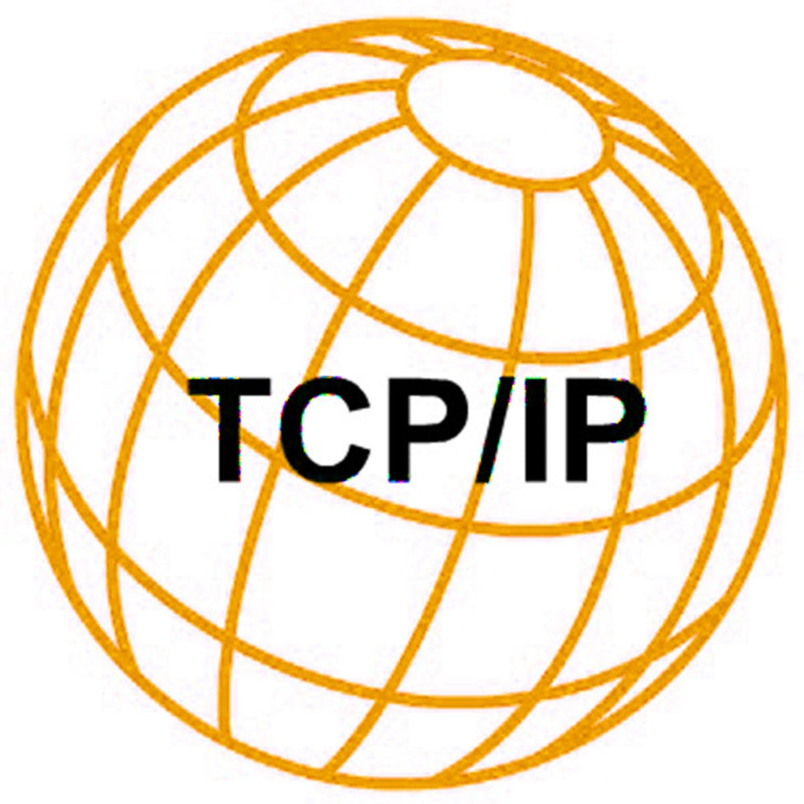
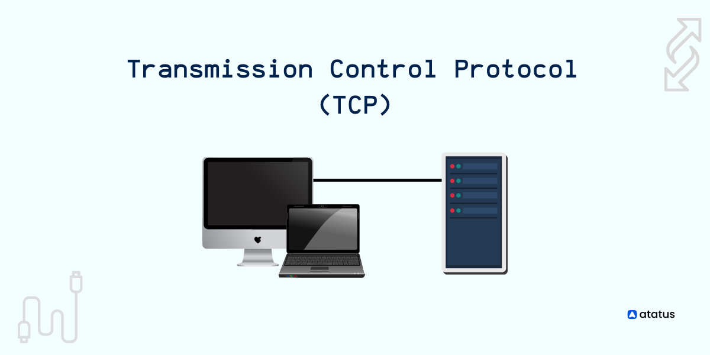
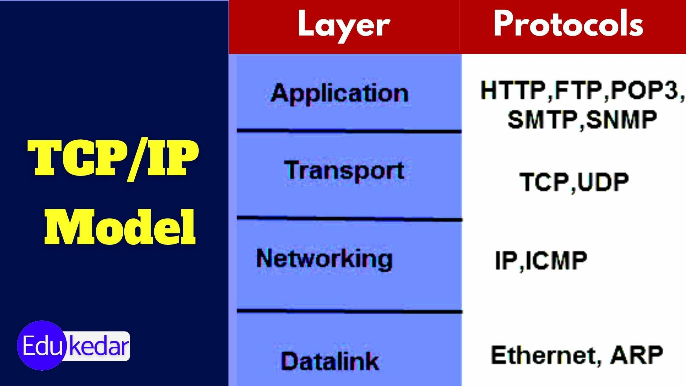

| Introducción al Protocolo TCP/IP |
El protocolo TCP/IP (Transmission Control Protocol/Internet Protocol) es un conjunto de reglas que permite la comunicación y la transmisión de datos a través de redes informáticas, incluyendo Internet. TCP/IP se compone de dos protocolos principales: TCP y IP, que trabajan juntos para garantizar que los datos se transmitan de manera efectiva y precisa entre dispositivos en una red. |
 |
| Protocolo de Control de Transmisión (TCP) |
El Protocolo de Control de Transmisión (TCP) es responsable de asegurar que los datos se transmitan de manera confiable y en el orden correcto. Entre sus funciones clave se incluyen:
|
 |
| Protocolo de Internet (IP) |
El Protocolo de Internet (IP) se encarga de la dirección y el enrutamiento de los datos a través de la red. Sus funciones incluyen:
|
|
| Otros Protocolos en la Suite TCP/IP |
Además de TCP e IP, la suite TCP/IP incluye otros protocolos importantes, como:
|
 |